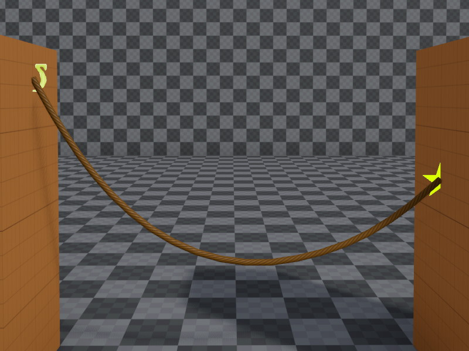

PhysX Rope Component
The PhysX rope component is used to physically simulate ropes, cables and chains.
Ropes can be attached to walls as decorative elements (cables, wires), or they can even be attached to dynamic physics objects to link them together. This can be used as a gameplay feature.
If all you need is a decorative rope, that doesn't react to physical stimuli (except wind), prefer to use a fake rope component, as that has a much lower performance overhead.
Setting Up a Rope
A rope requires two anchor points between which it hangs. One anchor point is the rope object position itself, for the other one typically uses a dummy game object. The Anchor object reference is used to select which one to use.
In the object hierarchy it typically looks like this:

The position of the anchors can be moved in the 3D viewport to position the rope as desired. The approximate shape of the simulated rope will be shown as a preview. Use the Slack property to make the rope sag.

Run the scene to see the final shape and behavior.
Rendering
With just the rope simulation component, you won't be able to see the rope, at all. You also need to attach a rope render component to the same game object.
Examples
The Testing Chambers project contains a dedicated Ropes scene with many examples.
Simulation Stability
See Dynamic Actors - Simulation Stability.
The rope simulation uses a dedicated PhysX feature ("articulations"), which exhibits higher stability than regular actors with many joints. Thus it can achieve much better stability even with many linked bodies. However, overall the same guidelines to prevent stability issues still apply.
Component Properties
Anchor: A reference to an object whose position determines where the rope ends.AttachToOrigin,AttachToAnchor: Whether the rope is fixed at the origin or anchor location. If the respective object is attached to a dynamic actor, the rope will pull that actor. Otherwise, the rope will be fixed at that static location. If the rope is not attached at one or both ends it is free to move away from there.Mass: The total mass of the rope. It will be distributed equally among all pieces.Pieces: How many individual pieces the rope is made up of. More pieces look prettier, but cost more performance and may decrease the simulation stability.Slack: How much slack the rope has. A value of zero means the rope is hung perfectly straight between its anchors. Positive values make the rope sag downwards. Negative values are also allowed, they make the rope hang upside down. This is useful to create a longer rope that shouldn't spawn inside the ground. The rope can thus be placed above the ground and it will simply fall down after creation.Thickness: How thick the simulated rope is. This may be very different from how thick it is rendered. A thinner rope will have more simulation issues, such as tunneling through other geometry.BendStiffness,TwistStiffness: The stiffness determines how strongly the rope wants to get back into a straight, untwisted shape. This can be used to make the rope very springy. Note that extremely large values are necessary to get a visible effect. Also note that physics engines generally don't like extremely large values and thus this can easily make the simulation unstable. If large stiffness is used, make sure to also set large damping values, that counteracts severe oscillation.BendDamping,TwistDamping: How strongly the rope resists to changing it's current shape. Large values can make the rope 'freeze' even in unnatural shapes, and the rope may act more like a bent wire. However, increasing the damping values also reduces the potential for oscillation when large forces act upon the rope. It is a good idea to never set these values below 50.MaxBend,MaxTwist: These angles restrict how much each individual pieces in the rope can bend or twist relative to its neighboring piece. Low angles mean the rope is very stiff. A very flexible rope would use values above 45 degrees. Note that this only restricts how much the rope will bend or twist. If it should additionally try to uncoil itself, also set the stiffness values.CollisionLayer: The collision layer defines with which other objects the rope collides.Surface: The surface defines how slippery or bouncy the rope is.DisableGravity: If set, the rope will have no gravity applied and just floats in the air.